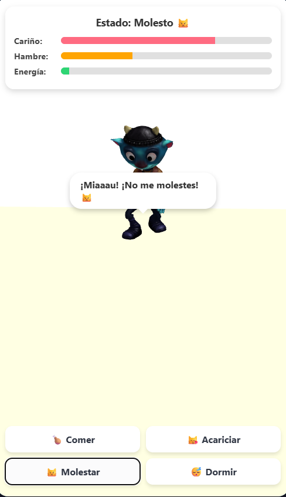

¿Qué es nuestra Solución Tecnológica?
Cat Time es una aplicación web interactiva de gestión del tiempo y carga académica que integra una mascota virtual en 3D. La plataforma combina la gamificación con herramientas de organización para transformar la manera en que los estudiantes manejan sus deberes y su bienestar diario.
¿De qué se trata?
La herramienta digital funciona como un organizador inteligente donde los jóvenes pueden llevar el control de sus deberes académicos. A través de un entorno gamificado con un gato virtual interactivo, el sistema motiva al usuario a cumplir con sus horarios, equilibrando el estudio, el autocuidado y el ocio de forma dinámica y atractiva.
Saber más / ¿Por qué es importante?
Es fundamental porque combate el estrés escolar y la procrastinación mediante el refuerzo positivo. Al vincular el rendimiento académico con el estado de salud y felicidad de la mascota virtual, los estudiantes desarrollan hábitos de organización a largo plazo, comprendiendo que el descanso y la gestión adecuada del tiempo son esenciales para evitar el desgaste mental.
100% Organizado
+50 Monedas

